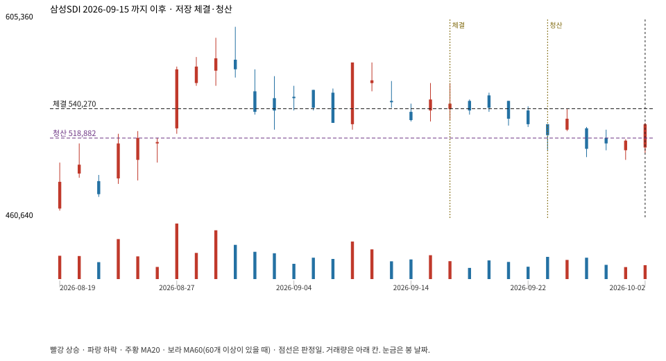

계좌를 다시 돌리지 않았다. 아래는 저장된 주문·체결·청산·비용·손익이다.

{
"case_id": "cb7091cebde33e0f",
"status": "closed",
"trade": {
"symbol": "006400.KS",
"signal_date": "2026-09-15",
"quantity": 3,
"entry": 547000,
"stop": 519142,
"target": 600000,
"planned_risk": 87550.36028699961,
"reserved_cash": 1642640.9999999998,
"fill": {
"date": "2026-09-16",
"price": 540270,
"fee": 1620.81
},
"exit": {
"date": "2026-09-23",
"price": 518882.429,
"reason": "stop",
"net_pnl": -67340.17028699978,
"ambiguous_bar": false
}
},
"cost": "research fee 10bp each side, slippage 5bp; amounts below are the stored ledger, not a new run",
"chart": "c\/cb7091cebde33e0f.svg"
}